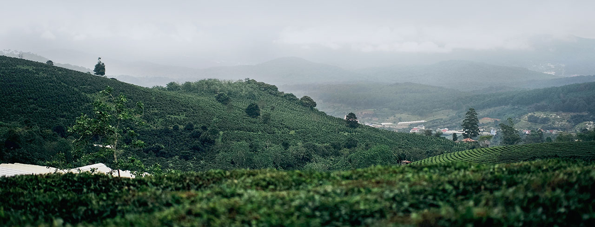

"if man has no tea in him, he is incapable of understanding truth and beauty" - japanese proverb

looseleaf
matcha
green
At the TEA CENTRE we are dedicated to introducing you to some of the finest loose leaf teas available. We have personally chosen some of our tea leaves directly from the tea farmer and hope that you will enjoy their flavours as much as we do. Please do not hesitate to ask any questions about tea - we will do our best to answer them or find the answer for you.